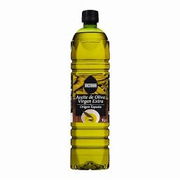

- Aceite 
- Tomillo

Lo primero de todo es tener preparado todo lo necesario para llevar a cabo la receta. Los ingredientes pueden varias según los gustos de quien la vaya a llevar a cabo, pero la base es siempre la misma.
Necesitaremos:
Una vez tengamos todo listo podemos empezar a cocinal el menú.
Primeramente, ya que tenemos todo sobre la mesa necesitamos pones a hervir el agua en un cazo o en una olla. Dependiendo de la intensidad del fuego esto puede tardar más o menos, por lo que necesitamos ser pacientes.
De mientras podemos ir haciendo la carne y los champiñones. Para ello cogemos la cantidad de carne que vayamos a utilizar y lo cortamos en trozos. Esto hacerlo preferiblemente sobre una tabla preparada para cortar. A su vez dejamos listo el paquete de champiñones.
Es importante embadurnar la sarten con aceite para no estropear la sarten y para que la carne no se quede pegada a la base. Además vendrá bien añadirle un poco de aceite para hacerlo más saluble.